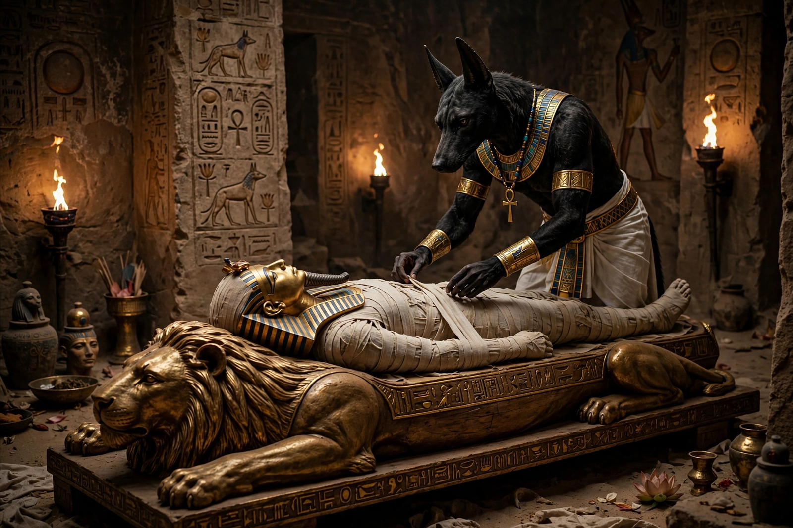

From Wikipedia, the free encyclopedia
| Anubis | |
|---|---|
| Affiliation | Egyptian mythology; god of funerary rites, mummification and the afterlife |
| Parents | Nephthys and Set (or Osiris, in later tradition) |
| Symbol | Black jackal; jackal-headed man |
| Roles | Inventor of embalming; guardian of cemeteries; weigher of hearts |
| Greek name | Anubis (from Egyptian Inpw) |

Anubis is the ancient Egyptian god of funerary rites, mummification, cemeteries and the protection of the dead, depicted as a black jackal or as a man with a jackal's head. One of the oldest and most frequently represented gods of Egyptian mythology, he presided over embalming — which he was said to have invented when he prepared the body of Osiris — guarded the necropolis against desecration, and assisted at the weighing of the heart in the judgement of the dead. His black colour signified not mourning but the colour of mummified flesh and of the fertile Nile silt: death bound up with regeneration.
Anubis's epithets map his functions: "Lord of the Sacred Land" (the necropolis), "He Who Is Upon His Mountain" (watching over the tombs from the desert cliffs), "Foremost of the Westerners" (the dead, buried in the west), and "He Who Is in the Place of Embalming". Priests wearing jackal masks performed his role in funerary rituals, including the Opening of the Mouth ceremony. The jackal association probably arose from real jackals and wild dogs seen around desert cemeteries; the god embodied their deflection into protection.
In the Book of the Dead's judgement scene, Anubis tends the great scales on which the deceased's heart is weighed against the feather of Maat, goddess of truth, while Thoth records the result and the monster Ammit waits to devour the unworthy. It is largely this scene, endlessly reproduced on papyri, that fixed Anubis's image in the modern imagination.
Anubis appears from the earliest dynasties — a jackal shrine of Anubis was found in Tutankhamun's tomb, a black jackal couchant upon a chest — and he was gradually overshadowed as chief funerary god by Osiris in the Middle Kingdom, remaining supreme in embalming and the necropolis. In the Graeco-Roman period he was merged with Hermes as Hermanubis. The small sacred city of Cynopolis ("Dog City") was his cult centre.
Egyptian mythology · Set · Osiris · Ra · Horus